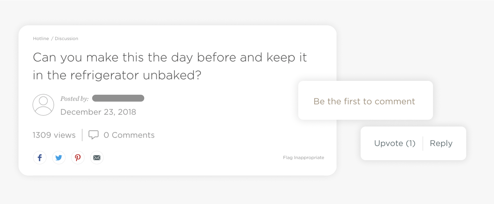

Food52 is an online platform that offers a space for home cooks to share their own recipes and stories to connect with others. The team approached Berkeley Innovation to help enliven their community and increase engagement among its members.
As a Product Design Consultant, I reimagined the website's community to a newly designed 0 -> 1 mobile app, aiming to encourage greater activity for both the existing and new members of Food52.
*I redesigned this project as an individual designer in 2023 to compare my skill growth while showcasing improved designs for the case study. All decisions made with the stakeholders were left as was.
Timeline
February - May 2021
Redesigned Nov 2023*
Tools
Figma
Google Suite
Team
3 Product Designers
1 Project Mentor
3 Internal Stakeholders
(Sr. UX Director,
VP of Digital Product,
Sr. Product Manager)
Skills
Native Mobile Design
Interaction Design
Design System

Food52 allows all of its member to submit their own recipes, ask questions regarding cooking and cookware, and meet like-minded cooks. However, while there are 2M+ registered Food52 members, their engagement with the site's community offerings is significantly low.
Thus, to address this difference in engagement, Food52 approached us with the following question:
In order to understand what constitutes a lively community, we looked into 6 competitors and popular social forum platforms and conducted discovery interviews of 14 active vs. non-Food52 users.
"Community is a safe space to share ideas, talk, and learn from others."
F 22, Active-user
"[For me, the ideal] community is a place to make friends."
F 30, Non-user
"I’m motivated to stick to a community if others are also engaged.”
F 30, Active-user